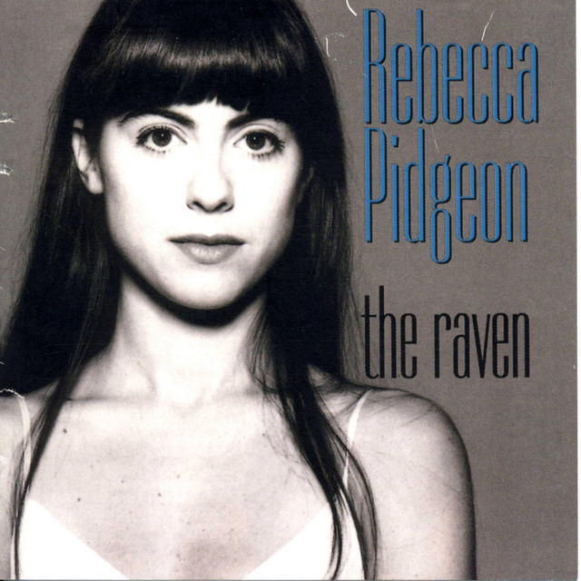

Rebecca Pidgeon - The Raven



Información del álbum facilitada por discogs.com:
Fecha de lanzamiento: 1994
Géneros: Jazz
Estilos: Smooth Jazz, Contemporary Jazz
Tracklist:
Kalerka (feat. Coco Kallis & Paul Miller (23)) 3:02
The Witch (feat. Coco Kallis & Paul Miller (23)) 2:47
The Raven (feat. Coco Kallis & Paul Miller (23)) 2:51
You Need Me There (feat. Coco Kallis & Paul Miller (23)) 3:40
Grandmother (feat. Elise Morris & Stephanie Smothers) 6:34
You Got Me (feat. Coco Kallis & Paul Miller (23)) 3:01
Heart And Mind (feat. Coco Kallis & Paul Miller (23)) 3:16
Her Man Leaves Town (feat. Coco Kallis & Paul Miller (23)) 3:32
Seven Hours (feat. Coco Kallis & Paul Miller (23)) 4:00
Wendy’s Style Shop (feat. Coco Kallis & Paul Miller (23)) 3:29
The Height Of Land (feat. Coco Kallis & Paul Miller (23)) 3:43
Spanish Harlem (feat. Coco Kallis & Paul Miller (23) & Phil Spector) 3:35
Remember Me (feat. Elise Morris & Stephanie Smothers) 2:31